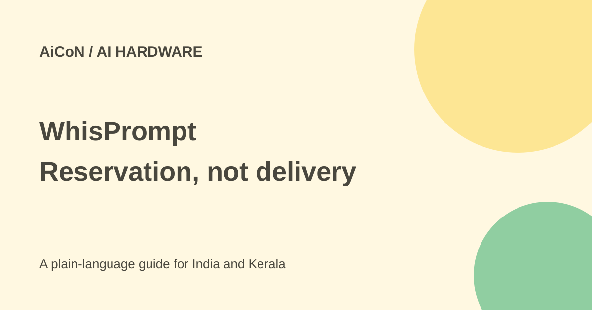

WhisPrompt: reservation price, local voice and India cautions
WhisPrompt is a proposed pocket controller for voice and AI workflows. Its current page sells a reservation, not proof of a finished device ready for delivery.

What is WhisPrompt?
The maker describes a palm-sized controller with voice input, buttons and a wheel. Its computer client targets an input field, returns to a configured agent window and shows whether supported work is running, waiting or done. Controls can be assigned to shortcuts.
The idea is to put common actions within one hand's reach. That does not mean it runs agents itself, works with every app or can approve every action. Compatibility depends on supported workflows and can change during beta.
How much does it cost?
The reservation page asks for $10 to lock in a $149 early-bird total. The deposit is applied, leaving $139 later. A $249 comparison price is shown. At the approximate ₹96.43-per-dollar reference used in this archive, these are ₹964 deposit, ₹14,368 total, ₹13,404 remaining and ₹24,012 comparison price.
These are estimates, not India checkout quotes. The page advertises free worldwide shipping and included taxes. Confirm India delivery, import handling, final charges, warranty and returns in the final offer.
When will it ship?
The current timeline estimates rolling shipments from November 2026 in reservation order. It also shows a September final-payment stage, already past at this October check. Ask for the current sequence before paying. An estimated month is not a guaranteed date or proof that production units have shipped.
The deposit is described as refundable until redeemed. Read final-order or pledge terms separately; the reservation refund statement does not automatically cover later payment. Early hardware and crowdfunding carry delay, specification and fulfilment risks.
Does local voice mean fully offline AI?
No. The maker says speech recognition can run on your computer, with optional cloud voice. Offline dictation does not mean offline agents or zero data leaving the computer. Ask where audio is stored and which cloud providers receive it.
The core experience is described as subscription-free, including controls, local voice and a cloud voice allowance. The allowance's amount and ongoing conditions were not settled by the material checked. Other AI tools may still require paid accounts or credits.
How to evaluate it
- List your operating system and AI apps.
- Ask for a current compatibility list and demo of those exact workflows.
- Check your required languages and accents. Malayalam and mixed-language accuracy were not verified.
- Check which approvals it can show and how accidental presses are prevented.
- Read deposit and final purchase terms separately, including India returns.
- Wait for independent reviews and shipment evidence if reliable delivery matters most.
What changed since the original AiCoN post?
The old post described a Kickstarter launch. The current first-party route is a refundable deposit and estimated fulfilment timeline. This guide uses that route, labels the target as an estimate and separates local voice, cloud allowance and outside AI costs.
Frequently asked questions
Does $10 buy the device?
No. It reserves the stated $149 total.
Was shipment verified?
No shipment proof was verified here.
Does it work with all agents?
Do not assume so. Check supported workflows.
Is it free AI?
No. It is paid hardware, and other AI services can cost extra.
Sources: Reservation and timeline · Official description and FAQ. Checked 7 October 2026.